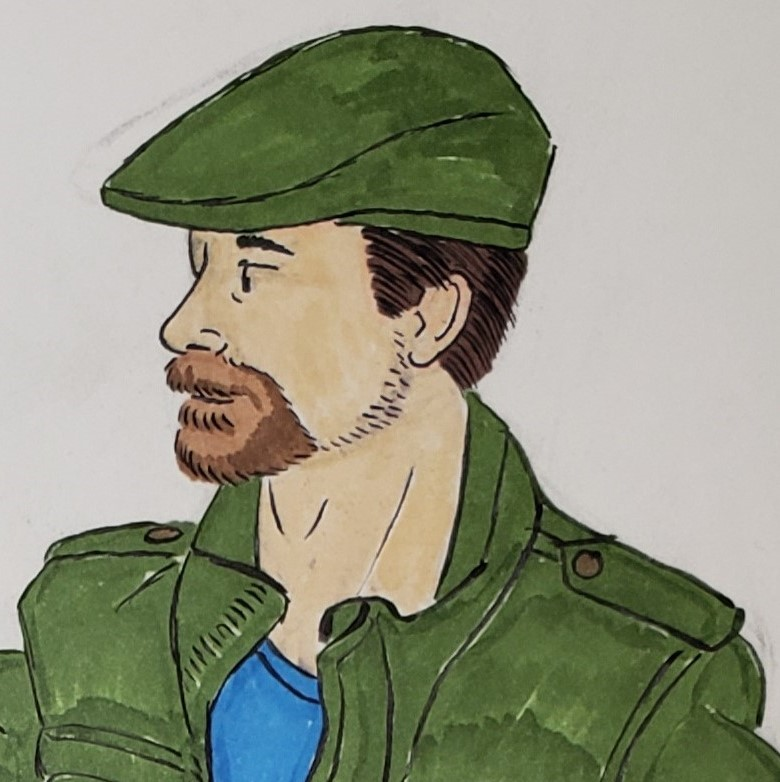

|  |
A lifelong resident of southern Maryland, Daniel Oster also considers himself a lifelong artist working undercover as an assistant manager in the retail industry. Aside from some art classes at Patuxent High School and McDaniel College Mr. Oster considers himself largely self-taught from studying the works of artists in the worlds of fine art, cartooning, illustration, and social media. |
{kind=link}
While Mr. Oster draws much of his style from the comic strips of his childhood, especially Bill Watterson’s Calvin and Hobbes, Mr. Oster firmly believes in eclecticism: the ability to synthesize influences from different aesthetics and disciplines to create something more than the sum of its parts. In his earlier days as an artist he used colored pencils for the majority of his work until he decided to move away from colored pencils and use Prismacolor and Copic markers instead because of their more solid colors. In recent years however Mr. Oster decided to move use digital art programs to color his work for the foreseeable future.